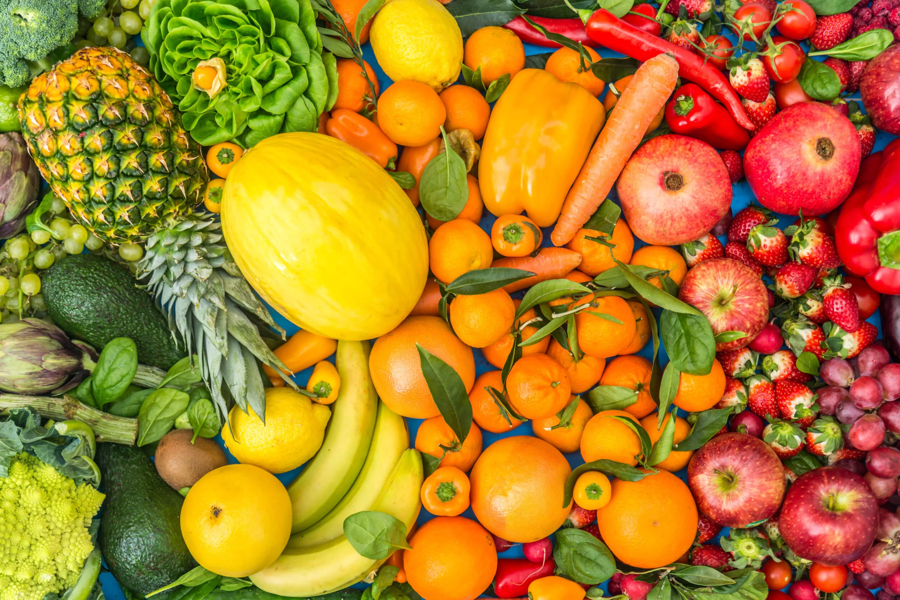
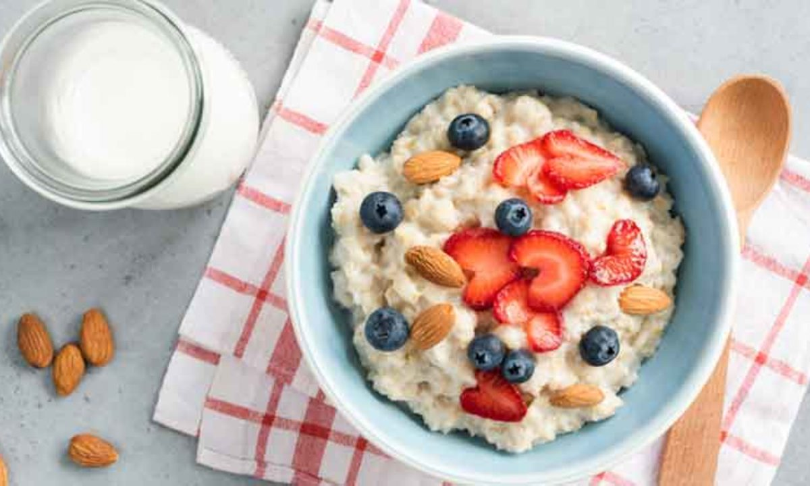
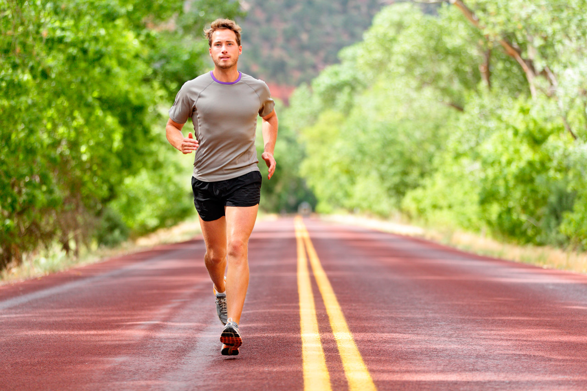

Bienvenido a Vive Saludable 💚
Tu espacio para aprender a cuidar tu cuerpo, mente y alimentación de forma natural y práctica.
Recetas Saludables 🍲
Encuentra ideas fáciles y deliciosas para cuidar tu cuerpo desde la cocina.
ensalada fresca

Batido verde
avena con Frutas
Rutinas de Ejercicio 💪
Muévete y mejora tu energía con ejercicios simples y divertidos.
El yoga promueve la conexión entre los movimientos físicos, la respiración y los pensamientos para lograr un estado de equilibrio holístico, y mejora la flexibilidad y calma tu mente
Correr ayuda tanto a la salud física como mental, mejorando el sistema cardiovascular, fortaleciendo músculos y huesos, y promoviendo la pérdida de peso. También es beneficioso para la salud mental, ya que puede reducir el estrés, la ansiedad y la depresión, y mejorar el estado de ánimo, la autoestima y el sueño.

Las pesas ayudan a aumentar la fuerza y la masa muscular, mejorar la densidad ósea y acelerar el metabolismo, lo que contribuye a perder grasa y controlar el peso. Además, mejoran la salud mental, reduciendo el estrés y la ansiedad, y previenen enfermedades crónicas y la osteoporosis.
Bienestar Integral 🌸
Descubre consejos para cuidar tu mente, descansar mejor y vivir en equilibrio.